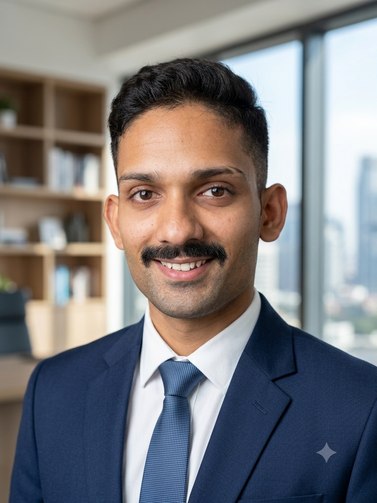

Senior Software Engineer | Backend Systems
Building resilient .NET backends that move data, events, and products forward.
Mumbai-based backend engineer currently at Wissen Technology, with 4+ years across product and services-led teams building secure API platforms, event-driven services, database abstractions, Azure workflows, and production-ready infrastructure.

I work close to the engine room: secure REST APIs, EF Core interceptors, Outbox Pattern, Kafka event delivery, Redis-backed validation, multi-database provider abstractions, Azure serverless workflows, queue optimization, and the reliability details that keep production systems calm under pressure.
Core Expertise
Backend depth with production instincts.
Architecture
Designed for scale, change, and observability.
Client Apps
.NET APIs
Domain Services
SQL + Cache
Event Bus
Experience
Senior engineer mindset, hands-on execution.
Senior Software Engineer at Wissen Technology with prior backend and full-stack experience at Enablistar Pvt Ltd and Zeus Learning, focused on high-traffic APIs, distributed logging, event-driven pipelines, database performance, and secure service architecture.
Showcase
Expandable case studies for recruiter attention.
Contact
Available for backend engineering roles and product-focused teams.
Based in Mumbai, India. Reach out for senior backend roles, distributed systems work, .NET platform engineering, Azure-backed product teams, or technical leadership conversations.